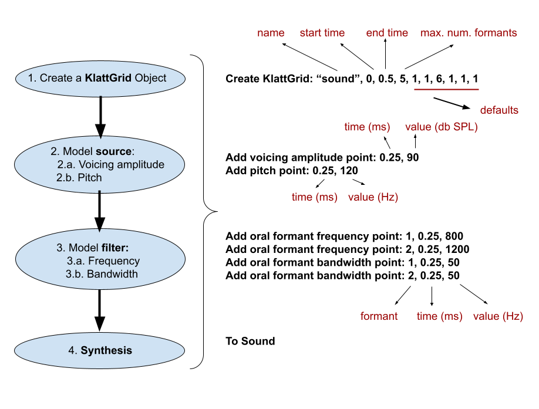

Week 10: Klatt grids: synthesis from scratch
1 The Klatt grid
Among the many possible objects that Praat can create is a KlattGrid. A KlattGrid is an implementation of the famous Klatt synthesizer, which allowed speech researchers to create sounds with a great deal of precision.
The KlattGrid includes a long set of parameters that can be adjustable in a parallel way (that is, they are set independently from one another, and you can specify the time in which any of these parameters is activated). If you recall week 9, the Manipulation object showed pitch and formant in separate, parallel tiers. The KlattGrid works in a similar way. The figure below is a conceptual diagram of the KlattGrid.

In order to create a given speech sound, we can model all the aspects shown in the picture above. Minimally, if we wanted to model a vowel sound, we must specify two formants and a pitch value at a given point in time, just like the Pitch and Formant tiers. Below is a friendlier version of the Klatt Grid creation process, which would require to follow four steps: (a) Creating a KlattGrid object, (b) add the parameters for the source, (c) add the filter, and (d) synthesize.
2 Creating a vowel sound
In previous sessions we have seen that sounds can be resynthesized: that is, we take an existing sound and we modify some of its acoustic parameters. But with the KlattGrid we can also create sounds from scratch. Let’s see the following script:
Create KlattGrid: "vowel_a", 0, 0.5, 5, 1, 1, 6, 1, 1, 1
Add pitch point: 0.25, 120
Add voicing amplitude point: 0.25, 90
Add oral formant frequency point: 1, 0.25, 800
Add oral formant frequency point: 2, 0.25, 1200
Add oral formant bandwidth point: 1, 0.25, 50
Add oral formant bandwidth point: 2, 0.25, 50
To SoundThis script creates a vowel [a]. The first line creates a KlattGrid object called vowel_a starting from 0 ms and 0.5 s long, with a maximum of 5 formants. The last arguments correspond to other default values that we don't need to tinkle with at this point.
Line 2 adds a pitch point in a PitchTier (recall week 9) at 0.25 s, with a value of 120 Hz; this is a low pitch that can be associated to a male voice.
Line 3 adds a voicing amplitude point; that is, how ”loud” we want this pitch point to be. We located it at the same moment in time as the pitch point (0.25 s) and we gave it a value of 90 dB SPL. With these three lines we have modeled a very simple voiced sound (that is, the source).
Now we need to model the filter part; that is, the formants. For each formant we will need to add at least two lines:
- A formant frequency point: that is, we give a certain value in Hz to the formant at a given point in time. The command is
Add oral formant frequency point:and the arguments are: formant number, the moment in time when we want it (so, if our vowel will be 0.5 seconds long, then we want to add this formant point, say, in the middle; that would be 0.25); and finally the value in Hz. Lines 4 and 5 in the script above do that, with formants 1 and 2. We gave F1 a value of 800 Hz, and F2 a value of 1200 Hz. - A formant bandwidth point: Every formant requires a bandwidth. We gave these two formants a bandwidth of 50 Hz (Lines 6 and 7).
Lines 4 to 7 model the filter part, by adding a formant frequency point (= a given value in Hz) in a FormantGrid object. We set the values of F1 to 800 Hz and F2 to 1200 Hz; both formants have a bandwidth of 50 Hz. Finally, line 8 generates a Sound object from the KlattGrid.
Quick exercise: Create a vowel sound that could be identified as /u/. After you created it, add a second pitch point of about 20-30 Hz lower than the first one at the end of the sound. Does it sound better or worse than without that second pitch point?
3 Creating a voiced plosive: the ”da” sequence
We will create a /da/ sound with the KlattGrid. Line 2 creates the KlattGrid in a way similar than the script in the section above; the only difference is the name and the duration.
#Creates a KlattGrid object called "da".
Create KlattGrid... da 0 0.3 6 1 1 6 1 1 1
#add formant loci for /d/, from 0 to 0.03s is closure
Add oral formant frequency point... 1 0.03 150
Add oral formant bandwidth point... 1 0.03 50
Add oral formant frequency point... 2 0.03 1800
Add oral formant bandwidth point... 2 0.03 50
#add voicing amplitude, vowel formants, and pitch targets
Add voicing amplitude point... 0.0 0
Add voicing amplitude point... 0.04 90
Add voicing amplitude point... 0.25 90
Add voicing amplitude point... 0.3 60
Add pitch point... 0.0 150
Add pitch point... 0.3 120
Add oral formant frequency point... 1 0.08 750
Add oral formant frequency point... 2 0.08 1250
#synthesis
To Sound
PlaySince the KlattGrid is modeled throughout the time domain, we can also create a sequence of sounds, thus changing the parameters at different points in time. The script above creates a ”da” sound, where the first 0.03 s is silent; lines 9 and 10 show that voicing amplitude has a value of 0 dB SPL until 0.04, when it rises to 90. This models the silence during the closure of the plosive /d/.
We will recall that plosives have a locus, that is, the starting point in Hz where the formants from the following sound start. In lines 4 to 7 we modeled a /d/ with an F1 locus of 150 Hz and an F2 locus of 1800 Hz (you can check these values in any phonetics book). Then, lines 15 and 16 change the formant values to 750 and 1250 Hz at 0.08 s, which is when our /a/ sound reaches the target formant values.
In order to create a more natural sound, we have also changed the pitch values, so that we get a descending pitch contour. This is shown in lines 13 and 14. Likewise, we have decreased the amplitude of the noise at the end, which is shown in lines 11 and 12.
Quick exercise: Try to change the [a] into the diphthong [ai].
4 Homework
Make a quick Internet search regarding (a) formant loci for voiced plosives /b d g/, or (b) formant values for diphthongs. Then choose between the following activities:
- (Level: easy peasy) What is the formant locus for a /b/? Find that out and modify the script in section 3 accordingly.
- (Level: requires some tinkering) What are the formant values throughout a diphthong such as the one in the word time? Modify the script in section 2 in order to make it work. Hint: for each formant, you will need to add one further frequency point with its corresponding bandwidth.
Done? Upload your modified script to ILIAS as usual, with your last name on the file name. If you have any questions, ask away!